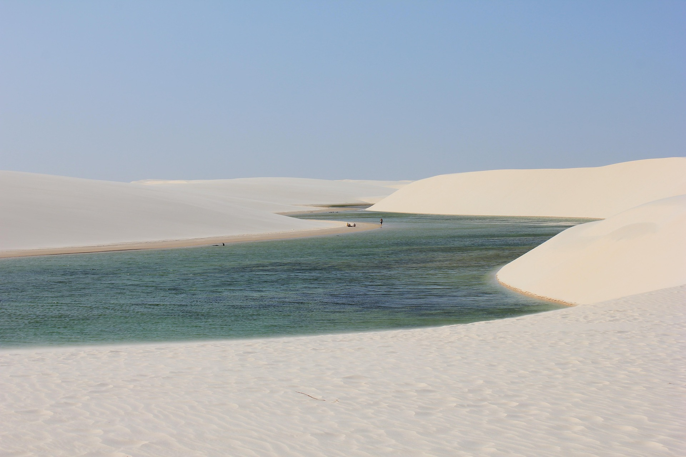
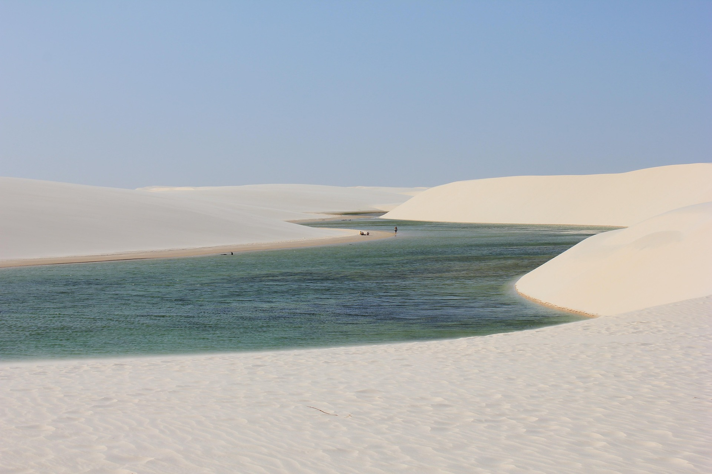

Welcome to Your Personal Travel Album
Do you love discovering new places, feeling the sand beneath your feet, or watching the sunset melt into the sea? Then this is the place for you.
 



Share your favorite vacation moments, explore beautiful destinations, and get
inspired
by others. Whether it's a hidden cove in Greece, the golden beaches of Brazil, or a quiet morning by
the
sea - every picture tells a story.
This isn't just a photo album. It's your personal window to the world, an invitation to
relive your best memories,
discover new horizons, and inspire others to see beauty in the
everyday.